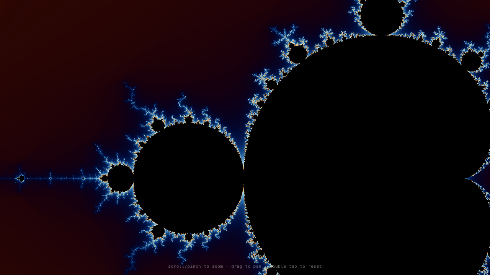
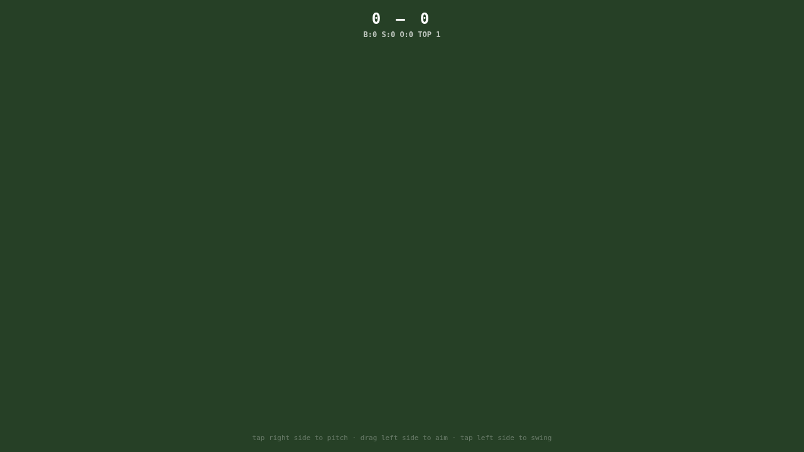

Each demo was generated by an AI workflow running inside a Trusted Execution Environment (TEE). The pipeline:
The entire process is orchestrated by Smithers, a reactive workflow engine. Both agents (code and judge) run as tool-less LLM calls through a ZAI-proxied API endpoint. Side effects — writing the HTML file, taking the screenshot, publishing to GitHub — happen in a JSX render function via execSync.
Smithers 0.15.1 Bun @ai-sdk/anthropic ZAI API Playwright + SwiftShader Phala TEE (dstack) GitHub Pages

A fullscreen WebGL fragment shader that computes the Mandelbrot set in real time. Each pixel maps to a complex coordinate, iterated through z = z² + c with 256 max iterations. Smooth coloring uses iter - log₂(log₂(|z|²)) for continuous gradients between integer iteration bands. A cosine-based palette function cycles through blues and dark reds over time.
The initial view is centered at (-0.745, 0.186) — the seahorse valley, one of the most visually rich regions. Zoom and pan targets interpolate toward their destinations at 10% per frame for buttery movement.
TRIANGLE_STRIP) — all computation in the fragment shadera + b·cos(2π(c·t + d)) with offset d = (0.0, 0.1, 0.2) for cool tonesu_time uniform slowly animates the color cycleDevice pixel ratio is clamped to 2× to prevent excessive canvas resolution on high-DPI mobile devices. The shader is lightweight enough to maintain 60fps on most GPUs at 1080p.

A complete 3D baseball game rendered with raw WebGL — no libraries. The scene includes a ground plane, baseball diamond with bases, pitcher's mound, pitcher figure (two spheres for head/body), batter figure, bat, and ball. Camera sits behind home plate looking toward the pitcher.
Game logic tracks balls, strikes, outs, innings (top/bottom), and runs for both teams. Three pitch types are randomly selected: fastball (straight), curveball (lateral sine wave), and slider (am lateral drift). Hit detection checks ball-bat proximity using Euclidean distance.
mat4Perspective, mat4LookAt, mat4Mul, mat4RotX/Y/Z|x| < 0.4 and 1.0 < y < 2.0 when ball crosses platesin(t·8)·1.5 for a quick rotational arcmat4RotZ was missing — caused runtime crash on every bat swing. Added the rotation matrix.createDiamond() was called inside the render loop every frame (memory leak). Removed the per-frame allocation.devicePixelRatio unbounded on high-DPI phones. Clamped to 2× max.Smithers runs a two-agent loop defined in a TSX file:
Output.text(). No tool calls, pure text generation. Uses claude-sonnet-4-20250514 through ZAI's Anthropic-compatible endpoint.{"approved": bool, "quality": number, "reason": string}. Must score ≥5 to pass.Both agents retry on failure (up to 7 attempts). The Smithers engine handles retries, state persistence (SQLite), and the reactive data flow between agents. Side effects live in the JSX render function — file I/O, Playwright screenshot, and git push all happen as synchronous shell commands during React rendering.
Docker was the original plan for headless WebGL but proxy socket errors in the TEE made it unusable. The working approach: Playwright with --enable-unsafe-swiftshader for software OpenGL. Libraries (libnspr4, libnss3, libdbus-1) were symlinked from a bundled Camoufox installation to the system lib directory.
child-process.ts — Smithers' spawn() fails with ENOENT on compound bash commands without shell wrappingengine/index.ts — ZAI sometimes wraps JSON responses in markdown code fences; strip them before JSON.parse